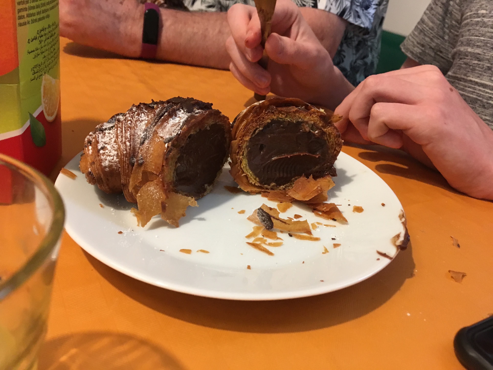
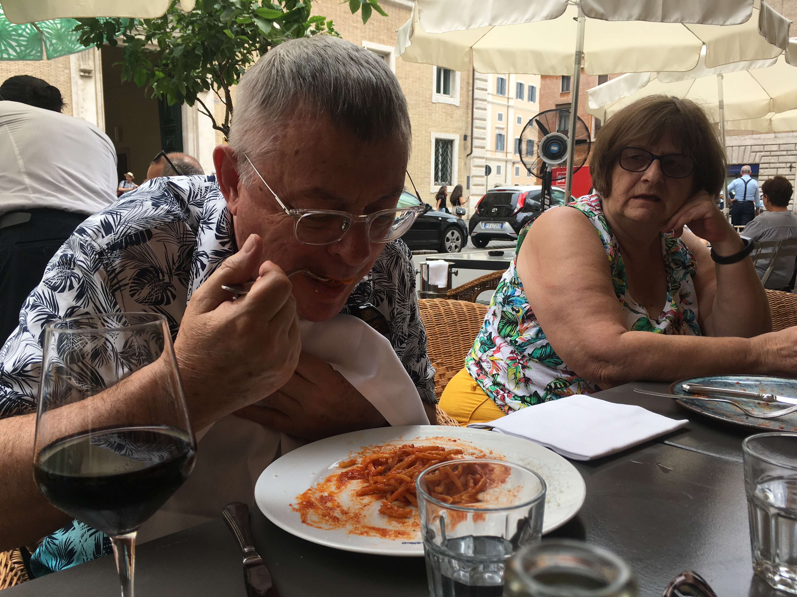
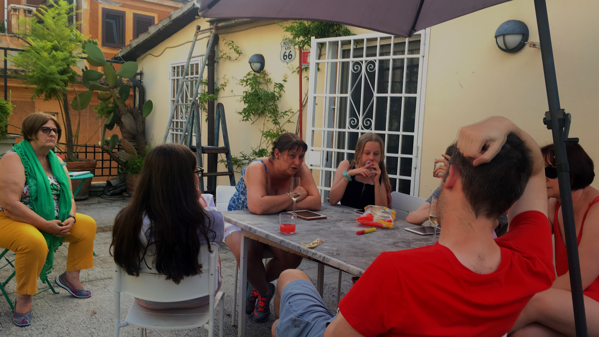
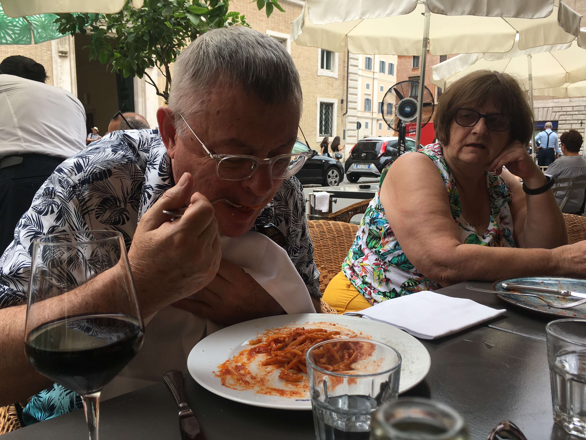
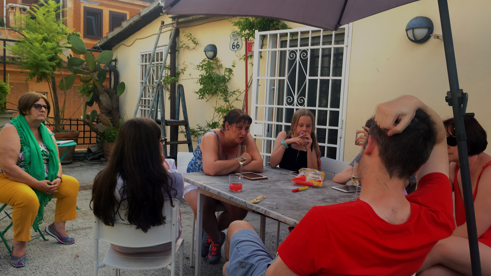

As we headed out for breakfast on Monday, I saw the rain and went back in to change my trouser shoes. Sorry, comedy fans.
The girls went to the breakfast shop and Chris and I did battle with the Metro ticket machine. In the end we gave up on the credit cards and fed what cash we had into the machine.
Back at the house, the breakfast purchases were something of a disappointment. Alison hadn’t managed to get anything gluten free and my pain aux raisins was covered in sticky lemon shite. I swapped it for a bendy croissant, no better than you would get in a supermarket. Chris found mine insufficiently lemony.
The kids all had an amazing looking crusty horn full of religieuses style chocolate creme patissiere. I tried to finish Chesk’s, but failed. It tasted of cardboard. It was also very difficult to eat.
I guess the Italians have spent so long getting dinner and tea perfect they didn’t bother with breakfast.
Then we headed out. So we didn’t lose Papy he dressed a Milton Jones.
As we left, a nun came out of the other half of our building. To be honest, my nun count has stopped. They’re all over the bloody place.
Down to the Metro station and, once we found the turnstile that worked, we were all in! And the escalators worked. Downwards, at least.
We got off at Piazza di Spagna. Street View had indicated that N&P would have to descend the steps to get there. We came out at the bottom. Result!
The rest of us left them there and scampered up and down them.
There is a strict no sitting rule enforced by police with whistles. Very sensible and particularly entertaining.
Next up, the Trevi fountain. Chris had been told it’s disappointing. I took this to mean that all the other fountains must be even more amazing.
We were there a long time, thanks to the presence of a Benetton and a church “full of brown paintings”.
Then the Pantheon.
One of Nanny’s favourite catchphrases is “Was it better than you expected?’. Well, this is just ridiculous. If it was as good as you expected, fine, but why would it ever be better? And the implication is that anything that wasn’t better than you expected is a disappointment, in which case why would you always arrange to do something disappointing?
The Pantheon was better than I expected. Two thousand years old and amazing. It made you wonder what the forum should have looked like before it was ruined.
We came out, then it started raining so we all went back in so we could see the rain coming through the enormous hole in the roof. I was glad to be without my trouser shoes.
Then we split up. Jake has read that you can get cheese and bacon fries in McDonald’s, so the Ellises went there to keep him happy. Us and N&P went to Piazza Navona. Lovely.
We headed out towards the river and after we decided lunch and some toilets were more important we went to a restaurant with free prosecco (an inch) and a free chocolate truffle at the end. I think he was wanting to look busier and make us stay as long as possible.
It was very nice, even if they did force Chesk to write them a favourable Trip Advisor review. Papy was particularly impressed with his pasta amatriciana.
During lunch Chesk asked how old Uncle Chris is. “Only 44? But he’s so...” “Old?”, C finished the sentence for her.
The next nearest place on our must see list was Campo De’ Fiore, which was alright, but the bloody market (that it’s famous for) sort of got in the way.
Then we headed off to meet the Ellises, but they kept moving. C rang them then handed me the phone to make arrangements.
N&P looked knackered so I agreed to meet at the number one cheap place to drink in Rome.
This was followed by a lot of shouting because C actually wanted to go to where they were so she could go in a shop somewhere, but because I didn’t realise this, I just chose what I wanted.
We walked in silence to the tram and then to the number one cheapest bar in Rome, where, rather like at home, a selection of men with nothing better to do were drinking and throwing crisps to a large dog.
We’d come this far so we sat down anyway, carefully choosing a table under the parasols, because the sun was peeking out. Six drinks for five of us (a slight miscalculation) for 9.50. It was true!
I saw C&A were on the way, so I let them know what it was like.
When they arived, rather than get the next round, I told Chris that it’s not table service then let him get me a drink. It was a genuine faux pas, honestly.
He came back with 66cl bottles of beer, so that took a while, during which they moved the parasol. Then, after more arguing between C & Chesk we headed back to the house, slightly knackered.
The tram took 26 minutes to arrive, but it was worth it, although predictably busy, thanks to the delay.
Jake and Chris got off the tram and on to the metro to go to Forbidden Planet. C went straight to the supermarket so Chesk and I went to help.
Drinks on the roof, tea, then more drinks on the roof.
Today we’re going to see the pope.
 


